Drie met een cursor, twee vrij binnen het systeem. Steeds in de menubalk, op mobiel en groot. De cursor knippert nooit.
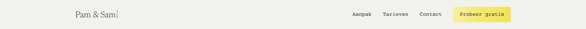
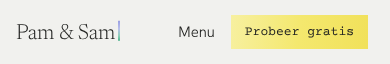
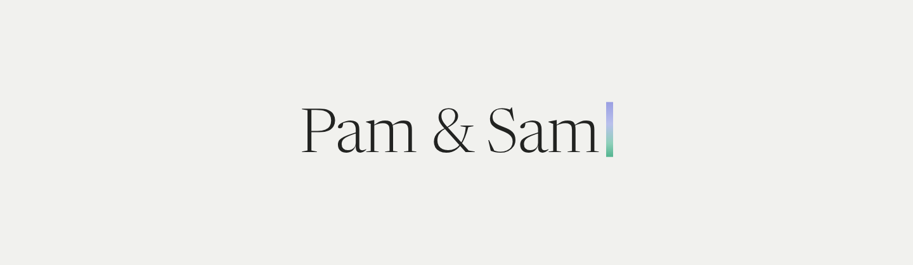
De naam in de letter van de koppen, met daarachter de staande cursor in het verloop van Pam naar Sam. De cursor staat stil; hij zegt: hier schrijf jij verder. Het meest rustig en het dichtst bij de site. Een cursor in een logo zie je vaker bij techbedrijven; het verloop en de schreefletter maken hem zachter.
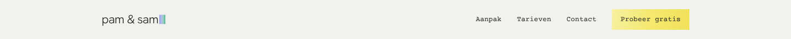
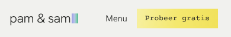
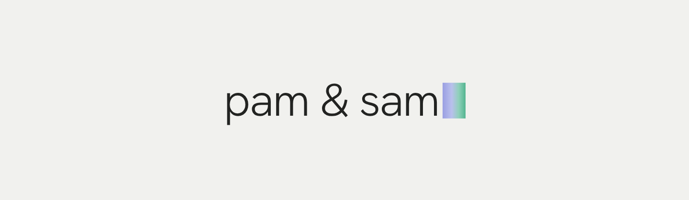
Kleine letters in de tekstletter, met een volle blokcursor zoals op een oude terminal, liggend in het verloop. Het herkenbaarst, ook als icoon. Maar het voelt het meest als software, en minder als een boek.
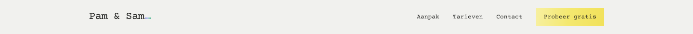
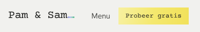
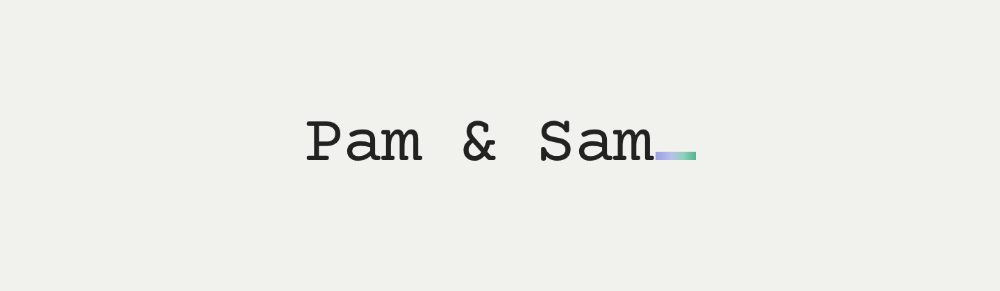
De typemachineletter met een liggende cursor, zoals een schrijfmachine die wacht op de volgende letter. Sluit aan op de typemachinelabels, maar die zijn juist weggehaald. Dan staat de letter alleen in het logo nog.
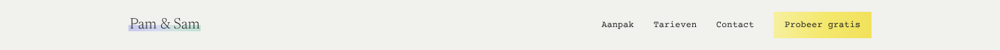
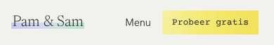
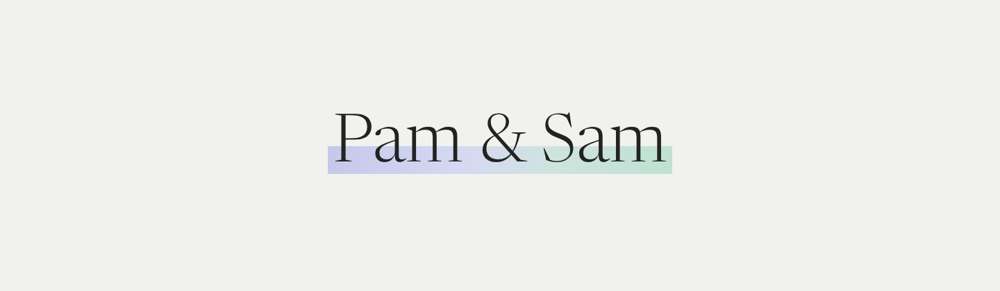
Geen cursor: het hele woord is gemarkeerd met één streep die van lavendel (Pam) naar mint (Sam) loopt. Het gebaar van de site, onderstrepen wat telt, wordt het merk. Het meest eigen in dit systeem. Klein wordt de streep een vlekje; als icoon werkt het alleen als losse streep.
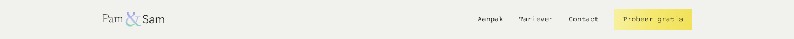
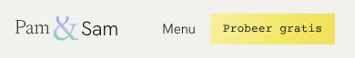
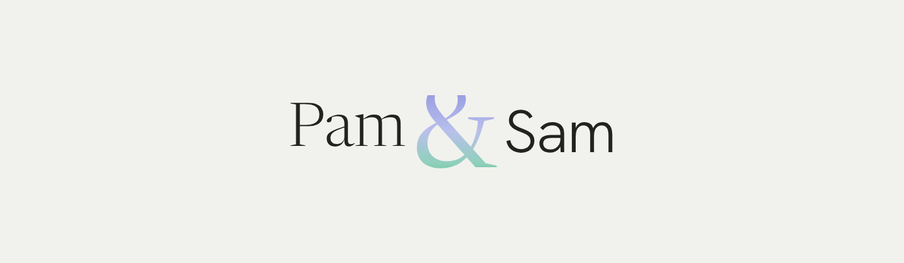
Pam in de schreefletter, Sam in de tekstletter, en daartussen een groot &-teken in het verloop dat beide verbindt. Het &-teken kan los het icoon zijn. Het meest gewaagd en uitgesproken. Het &-teken als merk is vaker gedaan; het verloop en de twee letters maken het eigen. Klein in de balk kan het druk worden.